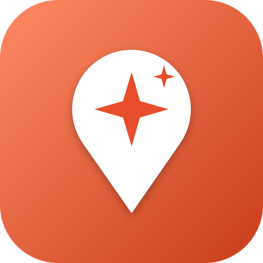

Privacy policy
What we keep
Your display name, username and photo (if you sign in with Google), your plans, favorites, places you've been, private notes, groups, messages, polls, friends and check-ins. They are stored in Google Firebase (Google Cloud).
Who can see it
Plans, favorites, notes and "been there" are private to you. Group members see the group's messages, polls and plan. Friends see your check-ins for 24 hours. Anyone signed in can see your display name, username and photo.
Only on your phone
Recently viewed places, searches, your star ratings, lists, ticked stops, things-to-bring lists and settings never leave your phone.
Reviews
Reviews you write (stars, your answers to the quick questions and your words) are public: any signed-in Khroga user can see them with your display name and your guide level. You can edit or delete a review any time; deleting your account deletes all of them. People can report reviews; we look at reports.
Share links
When you share a place, a plan or an invite, the link contains only place ids, times, a plan title or an invite code, never your location or messages. Links open Khroga if it's installed, or our web page if not. Google Play may ask you to rate the app; that's handled by Google.
Location
Your location is used only when you tap "Near me", "How far?", "Send my location" or "Check in". We never track you in the background.
Camera
The camera is used only to scan Khroga QR codes, on your phone. No photos are taken or uploaded.
AI
When you ask the AI to write a plan, the plan request and a list of real places are sent to Google Gemini. Your name and messages are never sent.
Error reports
If the app hits an error, a short technical report (no messages or personal details) may be saved so we can fix it. You can turn this off in Profile.
Reports and feedback
If you report a message or a person, or send feedback, we keep what you sent so we can review it.
Deleting your data
Profile → Delete my account removes everything we keep about you, right away. See the Delete account page.
No ads, no selling
Khroga shows no ads and never sells or shares your data.
Place data
Places come from OpenStreetMap (© OpenStreetMap contributors) and Overture Maps. Map tiles: OpenStreetMap / Stadia Maps. Photos from Wikimedia Commons. Weather from Open-Meteo.
Children
Khroga is not made for children under 13.
Contact
Use "Report a problem or idea" in the app, or the contact email on Khroga's Google Play page.
إيه اللي بنحفظه
اسمك الظاهر واسم المستخدم وصورتك (لو سجّلت بجوجل)، خططك ومفضلتك والأماكن اللي رحتها وملاحظاتك الخاصة والجروبات والرسايل والتصويت والأصحاب وتسجيلات الوصول. كلها محفوظة على Google Firebase.
مين يقدر يشوفها
الخطط والمفضلة والملاحظات و"رحتها" خاصة بيك. أعضاء الجروب بيشوفوا رسايل الجروب والتصويت والخطة. أصحابك بيشوفوا تسجيل وصولك لمدة 24 ساعة. أي حد مسجّل يقدر يشوف اسمك واسم المستخدم وصورتك.
على موبايلك بس
الأماكن اللي شفتها مؤخراً والبحث وتقييماتك والقوائم والمحطات اللي علّمتها وحاجات تاخدها معاك والإعدادات مش بتخرج من موبايلك أبداً.
التقييمات
التقييمات اللي بتكتبها (النجوم وإجاباتك على الأسئلة وكلامك) بتظهر للكل: أي حد مسجّل في خروجة يقدر يشوفها باسمك الظاهر ومستواك كمرشد. تقدر تعدّل أو تمسح أي تقييم في أي وقت، ومسح حسابك بيمسحهم كلهم. الناس تقدر تبلّغ عن التقييمات وإحنا بنراجع البلاغات.
لينكات المشاركة
لما تشارك مكان أو خطة أو دعوة، اللينك فيه بس أرقام الأماكن والمواعيد واسم الخطة أو كود الدعوة، عمره ما بيكون فيه موقعك أو رسايلك. اللينك بيفتح خروجة لو متسطّبة، أو صفحتنا على النت لو لأ. جوجل بلاي ممكن يطلب منك تقيّم التطبيق؛ ده بيتعمل عن طريق جوجل.
الموقع
موقعك بيتستخدم بس لما تدوس "قريب مني" أو "بعيد عني قد إيه؟" أو "ابعت مكاني" أو "أنا هنا". مش بنتتبعك في الخلفية أبداً.
الكاميرا
الكاميرا بتتستخدم بس لمسح أكواد QR بتاعة خروجة على موبايلك. مفيش صور بتتصور أو بتترفع.
الذكاء الاصطناعي
لما تطلب من الذكاء الاصطناعي يكتب خطة، طلب الخطة وقائمة أماكن حقيقية بيتبعتوا لـ Google Gemini. اسمك ورسايلك مش بيتبعتوا أبداً.
تقارير الأعطال
لو حصل عطل، ممكن يتحفظ تقرير فني قصير (من غير رسايل أو بيانات شخصية) عشان نصلحه. تقدر تقفل ده من حسابي.
البلاغات والاقتراحات
لو بلّغت عن رسالة أو شخص، أو بعتّ اقتراح، بنحتفظ باللي بعته عشان نراجعه.
مسح بياناتك
حسابي ← امسح حسابي بيمسح كل حاجة عندنا عنك فوراً. شوف صفحة حذف الحساب.
لا إعلانات ولا بيع
خروجة من غير إعلانات ومش بتبيع أو تشارك بياناتك أبداً.
بيانات الأماكن
الأماكن من OpenStreetMap و Overture Maps. الخرايط: OpenStreetMap / Stadia Maps. الصور من ويكيميديا كومنز. الجو من Open-Meteo.
الأطفال
خروجة مش معمولة للأطفال أقل من 13 سنة.
التواصل
استخدم "بلّغ عن مشكلة أو اقترح فكرة" في التطبيق، أو إيميل التواصل في صفحة خروجة على جوجل بلاي.
Last updated: October 2026 · آخر تحديث: أكتوبر 2026